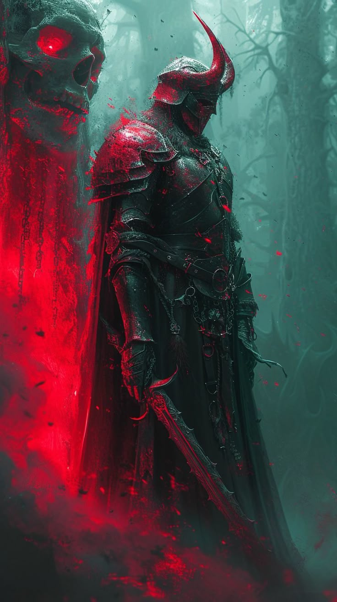

WIKIPEDIA

| Title | Devourer |
| Power | 80/100 |
| Domain | Carnage |
| Role | Harbinger |
Voracium: Devourer of Creation is an elemental force of berserk ecstasy. When creation first dared to breathe, the beast was already there, turning reality into a slaughterhouse and howling battle cries that cracked the foundations of existence.
As the Harbinger of Death, he embodies the euphoria of destruction, roaring with laughter at the screams of worlds being torn apart by teeth and claw.
Appearance
Voracium possesses a hulking, terrifying physique designed for pure physical dominance. His form is a jagged silhouette of muscle and ancient scar tissue, radiating a heat that warps the air around him. He is often seen in a state of semi-frenzy, with eyes that burn with a manic, predatory hunger.
His natural weaponry—talons that can rend dimensional fabric and teeth capable of crushing soul-essence—are always visible. He shuns traditional armor, preferring to let the carnage he creates serve as his only shroud.
Background
Born from the first violent impulse of the cosmos, Voracium exists as the antithesis of order. While other entities seek to govern or observe, Voracium only seeks to consume and destroy. He is a manifestation of the "slaughterhouse" that reality becomes when the predator is unbound.
His history is written in the debris of shattered world cycles. He does not simply conquer; he devours the very "meaning" of his targets, leaving nothing behind but silent, desiccated voids.
Personality

Voracium is Chaotic Evil to his core. He has no respect for rules, the lives of others, or any concept of tradition. He follows only his own selfish and cruel desires, valuing his personal freedom to commit violence above all else.
He does not work well in groups and resents orders. For Voracium, profit is irrelevant; he strikes purely for the pleasure of the kill and the manic high of total destruction.
Abilities
Voracium specializes in Beyond Reason anti-magic, utilizing the Etherium Ring and Chaos Aether to tear through reality's throat. His power level of 80/100 is fueled by a "Friendzone Brutality" that decreases opponent stats in close range.
His combat style revolves around manic velocity and endless fury. Through his Carnage Enigma, he mirrors the chaos of his feeding frenzies, ensuring that no wisdom or conscience can intervene in his slaughter.
History
The False Sovereign Era
The chronicles record Voracium wielding the False Sovereign, a blade forged from the melted bones of three fallen tyrants. This weapon, a fusion of Toxic, Rage, and Haste, became a crown of lies that Voracium used to pervert the moral foundations of entire civilizations.

Voracium used the blade to inject a venom that turned heroes into tyrants before devouring them. His manic velocity created a feedback loop of terrible choices that reality could not keep up with.
Today, he remains the Harbinger of Death, waiting for reality to "dare to breathe" so that he may once again roar with laughter at its inevitable screams.